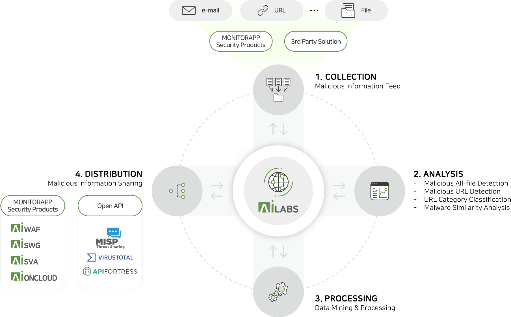
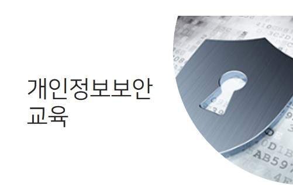

|
3. 제로 트러스트 보안 모델제로 트러스트는 네트워크 내부의 모든 사용자, 구성요소, 기기를 신뢰하지 않고, 항상 엄격한 인증과 검증을 거치는 보안 모델입니다. 특히 원격근무나 클라우드 환경에서 필수적입니다. 사용자와 디바이스의 상태를 지속적으로 확인하며 최소 권한 원칙을 적용하는 방식이 보안 침해 가능성을 낮춰줍니다. |
1. 인공지능(AI) 기반 보안인공지능은 이상 행동 탐지와 자동 대응을 통해 보안 효율을 획기적으로 높입니다. AI는 비정상적인 로그인 시도나 이상한 트래픽을 빠르게 감지해 사이버 공격과 데이터 유출에 더 효과적으로 대처할 수 있습니다. 하지만 AI 역시 공격 대상이 될 수 있습니다. 데이터 조작이나 AI 모델을 악용하는 새로운 유형의 위협이 등장하고 있어 이에 대한 대응도 필요합니다. |
2. 양자암호와 양자보안양자 컴퓨터는 기존 암호를 빠르게 해독할 수 있어 보안의 새로운 위협 요소입니다. 이를 해결하기 위해 '양자 내성 암호' 기술이 개발되고 있습니다. 또한 양자 암호화는 자연 발생적이고 불변하는 양자역학 법칙을 기반으로 보안 데이터를 암호화하고 전송하는 다양한 사이버 보안 방법을 말합니다. 양자 암호화는 이전 유형의 암호화 알고리즘보다 훨씬 더 안전할 수 있는 잠재력을 가지고 있으며 이론적으로도 해킹이 불가능합니다. |
|
|
3. 제로 트러스트 보안 모델제로 트러스트는 네트워크 내부의 모든 사용자, 구성요소, 기기를 신뢰하지 않고, 항상 엄격한 인증과 검증을 거치는 보안 모델입니다. 특히 원격근무나 클라우드 환경에서 필수적입니다. 사용자와 디바이스의 상태를 지속적으로 확인하며 최소 권한 원칙을 적용하는 방식이 보안 침해 가능성을 낮춰줍니다. |
|  |
4. 사이버 위협 인텔리전스(CTI)CTI는 해커의 활동, 악성코드, 공격 IP 등을 분석해 사전에 위협을 예방하고 이에 대응하기 위한 기술입니다. 국가나 대기업 보안 센터에서 활용됩니다. AI 기반 CTI 시스템은 실시간 데이터를 분석해 위협을 예측하고 자동으로 대응할 수 있어, 미래의 지능형 보안 시스템의 핵심입니다. |
|  |
5. 사용자 인식 및 보안 교육사람은 보안에서 가장 약한 고리입니다. 피싱 메일, 사회공학적 기법 등은 대부분 사용자의 실수를 노립니다. 따라서 미래에는 기술뿐 아니라 사람 중심의 보안 인식과 교육이 함께 이루어져야 보안 체계가 완성됩니다. |